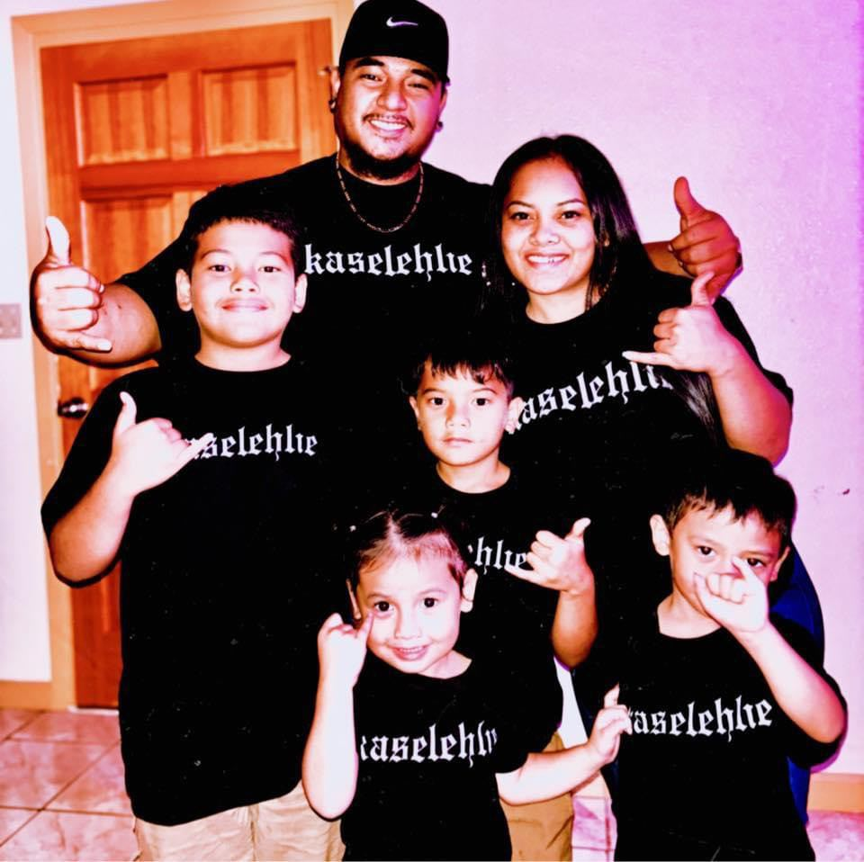

BIO

My name is Augustus Yuki Yakana. I was born and raised on the island of Pohnpei, in the Federated Statesof Micronesia. I am currently working as an Ambassador for CLEAR. I am pursuing a degree in software development here at BYU Pathway Worldwide/BYUI. I have been happily married for 10 years and a proud dad of 3 boys and a little princess.
Pohnpei, FSM 🇫🇲
Pohnpei, in the Federated States of Micronesia, is known for its lush rainforests, ancient ruins like Nan Madol (an archaeological site built on artificial islands), and its rich cultural heritage, including traditional navigational techniques and stone money.